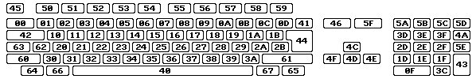
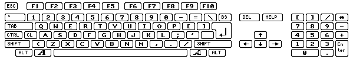
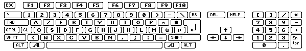
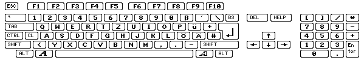

I codici RAWKEY della tastiera
Tutti i tasti utilizzati con WHDLoad devono essere specificati come codici rawkey.
Perciò ecco una tavola che mostra tutti questi codici in notazione esadecimale:

per confronto qui c'è la mappa per la tastiera US:

qui, invece, la tastiera francese:

e qui la tastiera tedesca:

e infine la tastiera italiana:
Codici dei pulsanti
A partire dalla versione 16.8 di WHDLoad è possibile uscire dal programma utilizzando un pulsante del mouse,
joystick o joypad. Per questo sono definite delle rawkey speciali elencate nella tabella sottostante. Queste
rawkey funzionano solo per l'opzione QuitKey e nessun altra.
Per far si che WHDLoad possa riconoscere la pressione di un pulsante l'opzione
NoVBRMove non deve essere utilizzata, la CPU deve essere almeno un 68010 ed
il programma installato deve avere l'interrupt "vertical blank" abilitato.
Le rawkey sono elencate sia in notazione esadecimale che decimale.
Se si utilizzano pulsanti di un joypad ($103..$109/$113..$119) come QuitKey
sarà impossibile per il programma installato determinare/testare/utilizzare il joypad. Il programma installato
vedrà connesso un joystick invece del joypad. Questo accade perchè ci sono delle restrizioni hardware che
limitano il controllo dello stato del joypad ad una volta ogni cinquantesimo di secondo. Quindi non bisogna
utilizzare quest'opzione per giochi che richiedono un joypad.
rawkey porta 0
di solito mouse |
rawkey porta 1
di solito stick/pad |
Mouse |
Joystick |
Joypad |
Megadrive |
Master System
TecnoPlus |
| $100/256 |
$110/272 |
pulsante sinistro |
fire |
Rosso/Select |
B |
A |
| $101/257 |
$111/273 |
pulsante destro |
secondo fire |
Blu/Stop |
C |
B |
| $102/258 |
$112/274 |
pulsante centrale |
| $103/259 |
$113/275 |
|
|
Play |
| $104/260 |
$114/276 |
|
|
Indietro/Orecchio Sinistro |
| $105/261 |
$115/277 |
|
|
Avanti/Orecchio Destro |
| $106/262 |
$116/278 |
|
|
Verde/Shuffle |
| $107/263 |
$117/279 |
|
|
Giallo/Loop |
| $108/264 |
$118/280 |
|
|
Rosso/Select |
| $109/265 |
$119/281 |
|
|
Blu/Stop |
Nelle versioni 16.4 - 16.7 di WHDLoad era possibile utilizzare $73 come QuitKey per uscire premendo
il pulsante sinistro del mouse. La cosa non funziona più nelle versioni 16.8 e superiori di WHDLoad.
Il nuovo codice rawkey $100 deve essere utilizzato.